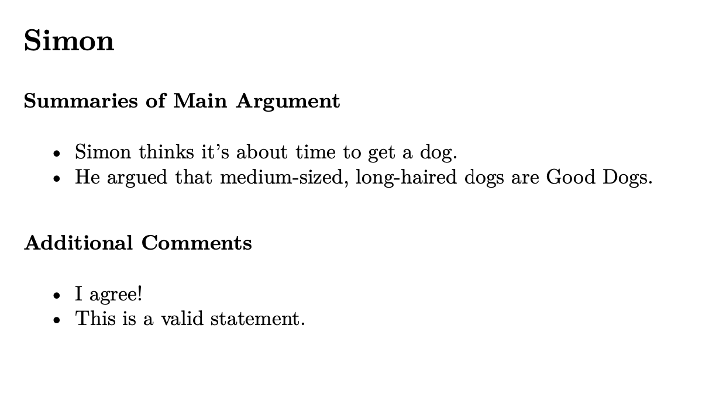

Over the past few years, I’ve come across the problem of generating PDF reports programmatically from data in a few different settings. This is, of course, a really vaguely defined problem, and they’ve all varied slightly in what they entailed and how automated they needed to be, but my solutions for each shared a few common ideas that I think are worth putting down in writing.
Most recently, in my role at the Reed College mLab, the problem went something like this:
It’s presentation week in a virtual class, and while each student is giving a presentation, the other students in the class are filling out a Google form with feedback for the presenter. The professor would like to put together a report for each student in the class containing all of the feedback for them.
I worked through this problem in my most recent shift, and my wonderful supervisor gave me the go-ahead on writing up some tips/tricks for working with similar problems in the future. (Thank you, Kristin!)
At a high level, the process usually looks something like this:
- Import and tidy your data
- Come up with some syntax to convert your data to a vector of lines that will form an
.mdfile - Write those vectors to
.mdfiles, render them, and delete the.mdfiles
For this problem specifically, in addition to the {tidyverse}, I used {googlesheets4} and {rmarkdown}. {googlesheets4} will allow us to read in the needed data, and {rmarkdown} will allow us to render the .md files we end up putting together to PDFs.
library(tidyverse)
library(googlesheets4)
library(rmarkdown)Let’s check out the data:
# read in all of the responses
responses <-
read_sheet(
"https://docs.google.com/spreadsheets/d/1saowcRmK3S4mUO5qOuDT_WQycNtGG1_eSYpETodzePw/edit?usp=sharing"
)
responses## # A tibble: 8 x 4
## timestamp presenter main_argument additional_feedback
## <dttm> <chr> <chr> <chr>
## 1 2020-11-09 13:27:29 Simon Simon thinks it's abou… I agree!
## 2 2020-11-09 13:32:04 Simon He argued that medium-… This is a valid stateme…
## 3 2020-11-09 13:56:17 Ingrid Visualizing legos with… You can bet your bottom…
## 4 2020-11-09 15:13:27 Ingrid Her data viz chops are… Foreal!
## 5 2020-11-09 15:21:37 Josh Pamplemousse is the be… Controversial statement.
## 6 2020-11-09 15:58:36 Josh Josh's Tidy Tuesday su… Not-controversial state…
## 7 2020-11-10 08:48:51 Leila ggplot2 pedagogy shoul… Leila's puppy is really…
## 8 2020-11-10 08:51:30 Leila Leila demonstrated a r… She is an incredible te…These responses might be fake, but my coworkers are the real deal.😄 I’ve created a couple rows for each mLabbie (i.e. student worker in the mLab) with some sample responses that look similar to the format that Google Forms exported.
That URL is public, so feel free to browse around the data! We’d like to use the {tidyverse} to create a PDF for each presenter, with all of their feedback from each respondent neatly collated.
First, we’ll split up the data by presenter using {dplyr}.
responses_list <-
responses %>%
group_split(presenter)
responses_list[[1]]## # A tibble: 2 x 4
## timestamp presenter main_argument additional_feedback
## <dttm> <chr> <chr> <chr>
## 1 2020-11-09 13:56:17 Ingrid Visualizing legos with … You can bet your botto…
## 2 2020-11-09 15:13:27 Ingrid Her data viz chops are … Foreal!Each element of responses_list is a data frame giving the responses for a given presenter.
Now, we’d like to come up with some sort of standard way to convert each of these data frames to lines in an .md file. This is the step that will look most different from application to application, but here’s what I used for this problem:
# collates responses from the dataframe for a given presenter into
# lines of a .md file
write_feedback_lines <- function(presenter_df) {
out <-
c(
paste0("# ", presenter_df$presenter[1]),
"",
"### Summaries of Main Argument",
paste0("* ", presenter_df$main_argument),
"",
"### Additional Comments",
paste0("* ", presenter_df$additional_feedback)
)
out
}There are all sorts of ways to go about this, many of which are likely more slick than the above code, but the main goal here is come up with a vector where each line will ultimately become a line in an .md file. With some calls to paste0 here, we can add bullet points before each response and section headers throughout.
The output of this function for Ingrid looks like this:
write_feedback_lines(responses_list[[1]])## [1] "# Ingrid"
## [2] ""
## [3] "### Summaries of Main Argument"
## [4] "* Visualizing legos with brickr is super neat!"
## [5] "* Her data viz chops are the real deal!"
## [6] ""
## [7] "### Additional Comments"
## [8] "* You can bet your bottom dollar it is."
## [9] "* Foreal!"We want to run this function on each presenter and write the results to an .md file. Using the map function from purrr to run this function on each presenter:
# make a vector of lines out of each data subset
presenter_lines <-
map(
responses_list,
write_feedback_lines
) %>%
# set the names of the object to the presenter's name
set_names(
map(
responses_list,
pluck,
"presenter",
1
)
)This next step is a bit clunky, and I’d absolutely welcome feedback here. We’ll write these vectors to .md files, render the .md to .pdf, and then delete the .md files!
# path to the directory you'd like to write to
folder <- "feedback/"
map2(
# the lines for each presenter
presenter_lines,
# the path to write the lines to for the presenter
paste0(folder, names(presenter_lines), ".md"),
# the function to use to write the lines
write_lines
)Checking that our code did what we want it to:
list.files(folder)## [1] "Ingrid.md" "Josh.md" "Leila.md" "Simon.md"Looks like the function wrote the files where we intended! Now, we can make use of the render function from rmarkdown to render the .mds to .pdfs.
# create the .pdf files
map(
paste0(folder, names(presenter_lines), ".md"),
rmarkdown::render,
"pdf_document"
)
# delete the source .md files
files <- list.files(folder, full.names = TRUE)
mds <- files[str_detect(files, ".md")]
file.remove(mds)Now, looking at all of the files in the directory again:
list.files(folder)## [1] "Ingrid.pdf" "Josh.pdf" "Leila.pdf" "Simon.pdf"Each .pdf looks something like this:

Nothing too fancy, but definitely snazzier and more pleasant to read than a spreadsheet.🦋
That’s it! If you’d like to spend some time with this code yourself, an abbreviated .R file is available here.
It seems like these kinds of problems come with all sorts of twists and turns in practice. Some other directions you could go with this:
- You could run this script on some regular interval, scheduling this task with CRON or GitHub Actions.
- Interweaving actual code results with text in these PDFs is a bit tricky.
rmarkdown’srender()will parse code chunks as normal when called on.Rmdfiles, and you’ll be dropping in code chunks with"```{r}". Parameterized reports could come in handy here as well.